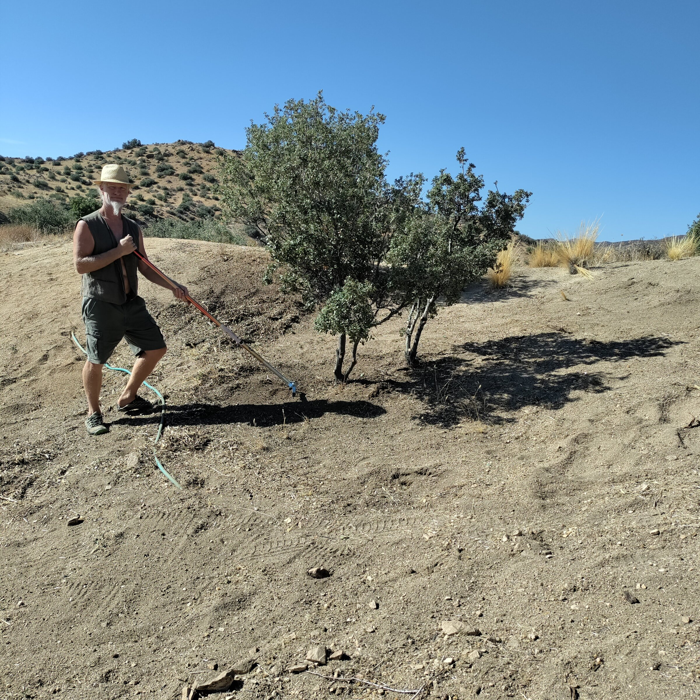
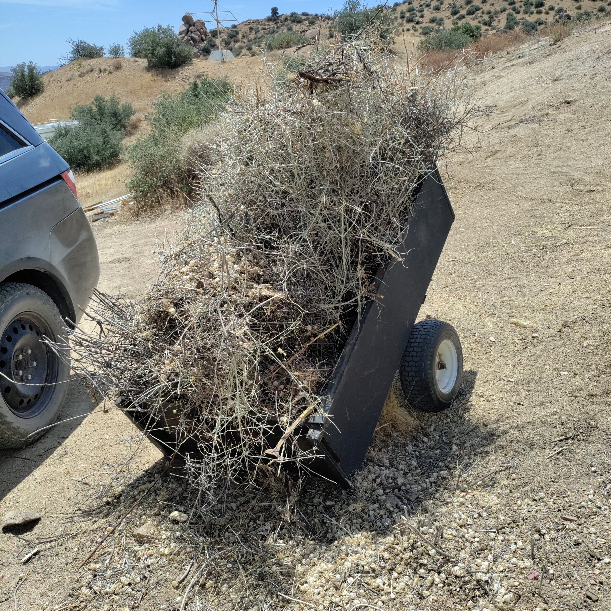
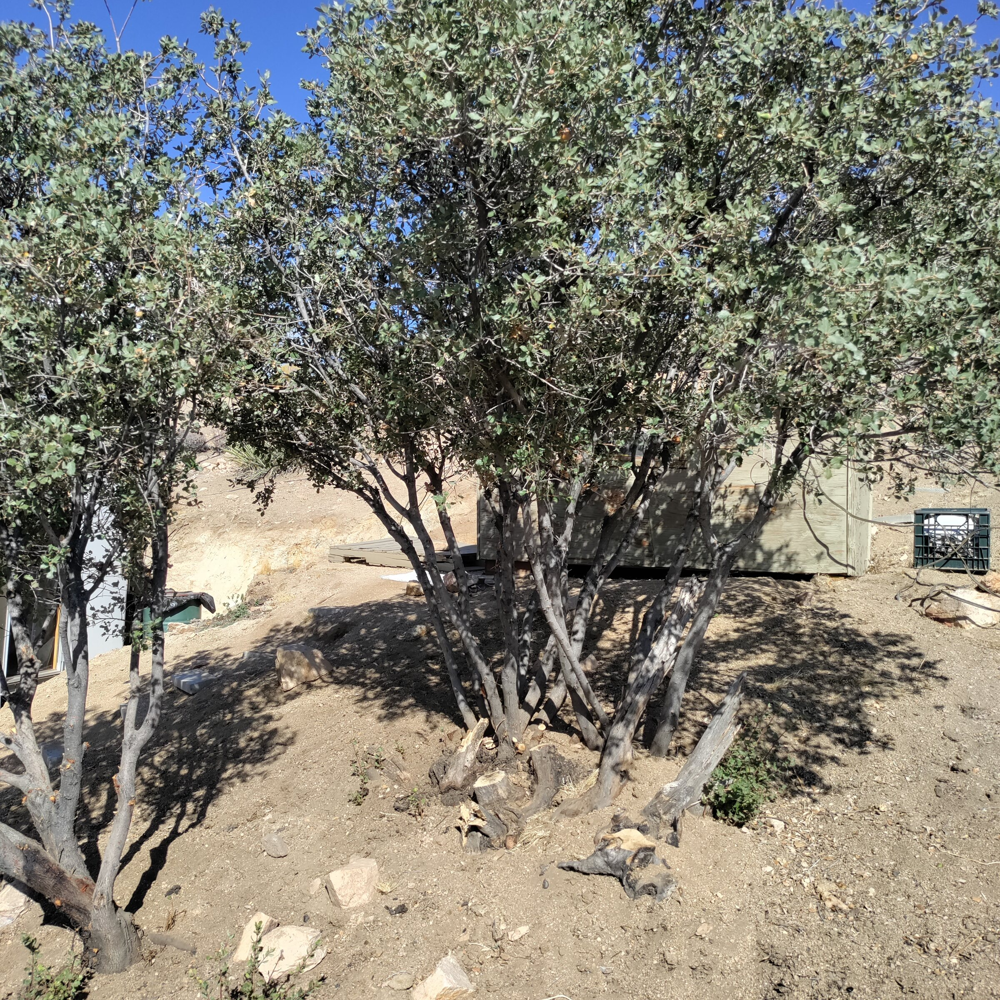
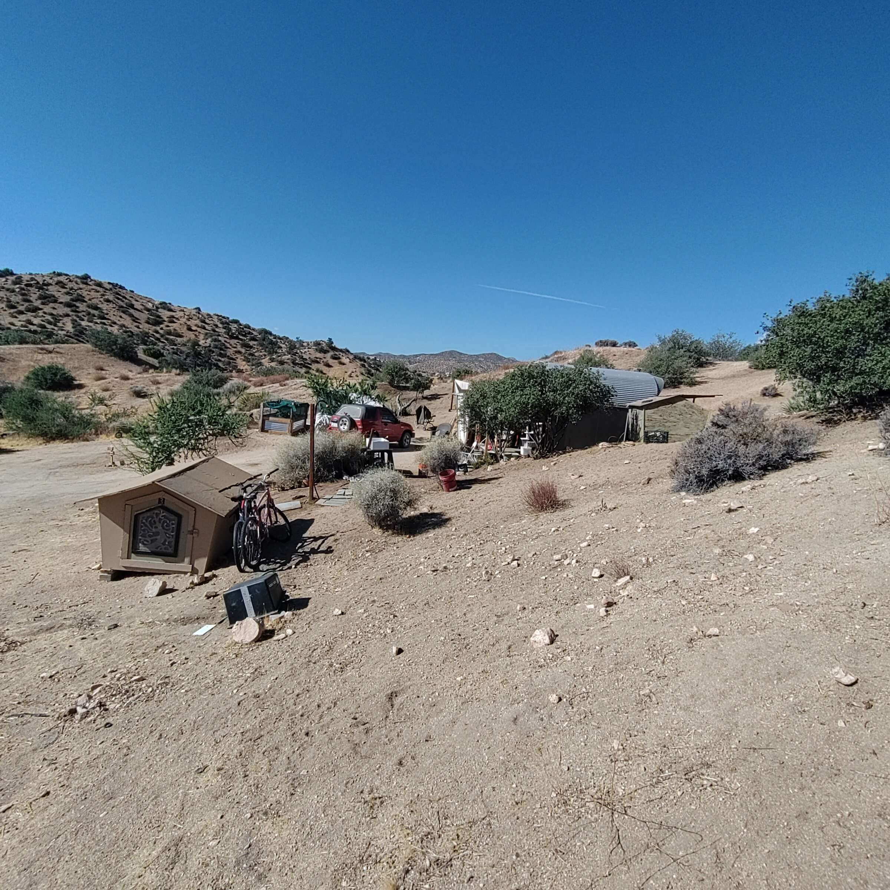
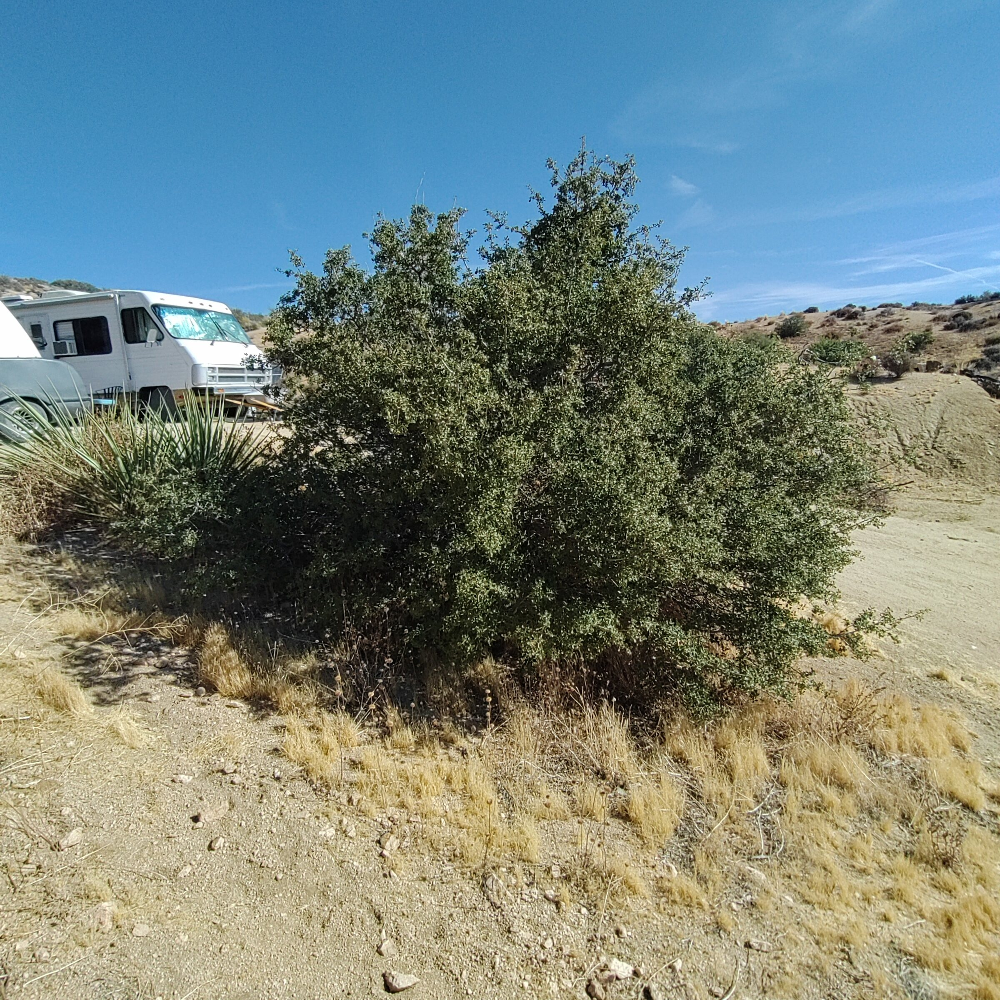
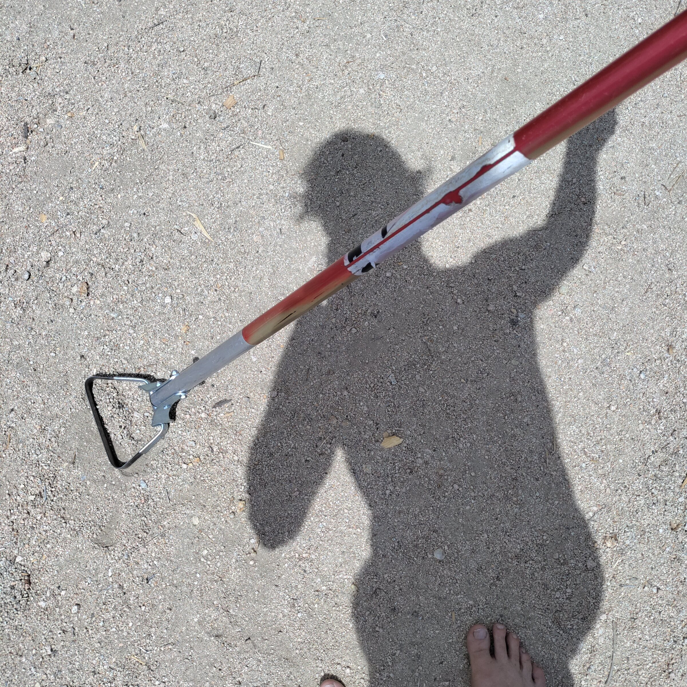

Field Report 013 · Land & Ecology
Fire Clearance
Fire clearance around my place in the Village.

Fire clearance around my place in the Village. The idea is to get all the duff from under the oak bushes and have at least 2 feet of space under the branches. Hula-hoeing will prevent fire from creeping along the ground and igniting trees. 30 feet minimum of completely clear ground from structures and then 100 feet after small plants thereafter.
From the pictures you can see what the oak trees look like before and after I cleared the brush from underneath them. it should be bare ground and if one tree does catch on fire it won't spread to the next one.
Photographic Record
The work, seen in place
Selected photographs from the private FieldStation source record.






System Thread
Related Fieldstation records
Public synopsis derived from Boulder Gardens Fieldstation Workbook source record FR013. Detailed equipment records, calculations, unresolved questions, and corrections remain in the workbook.